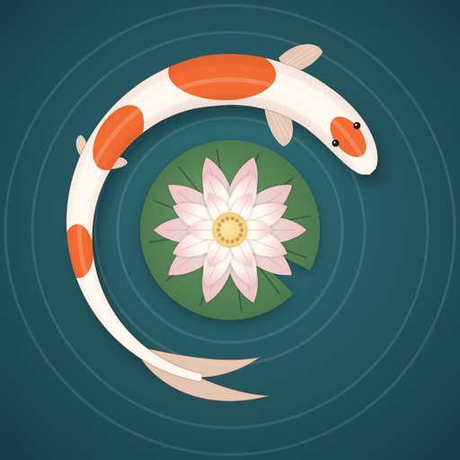
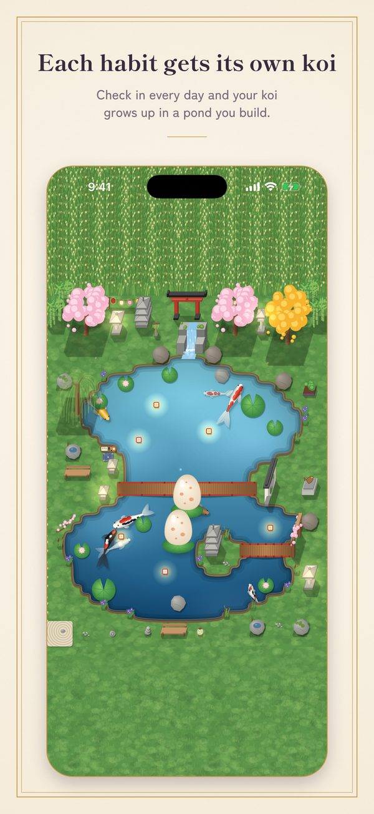
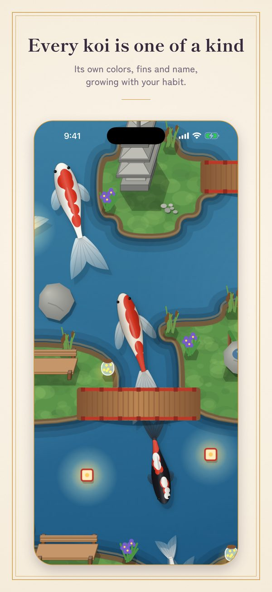
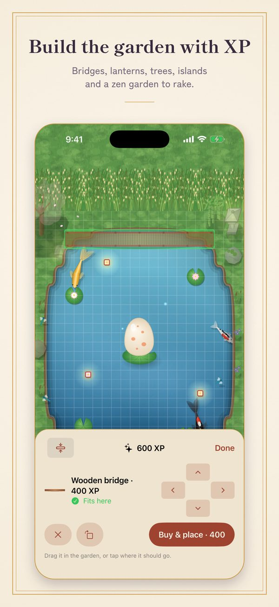
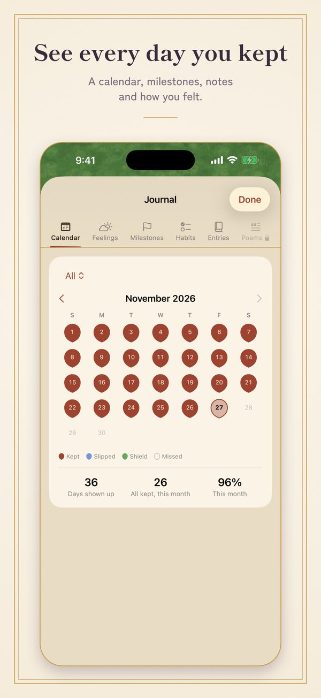
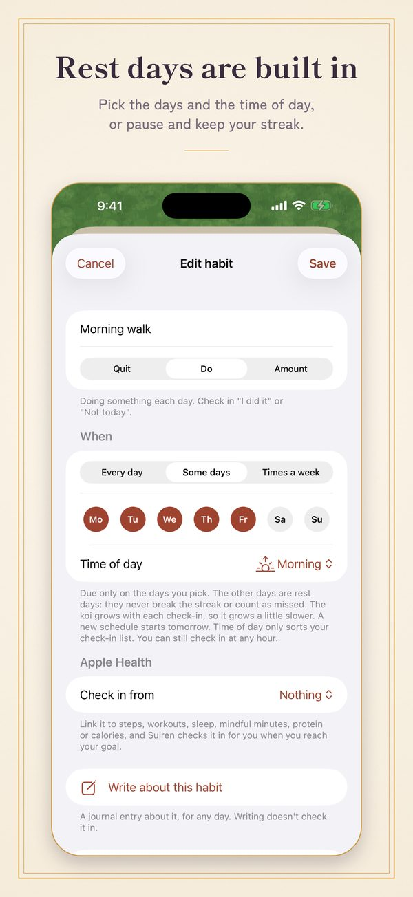
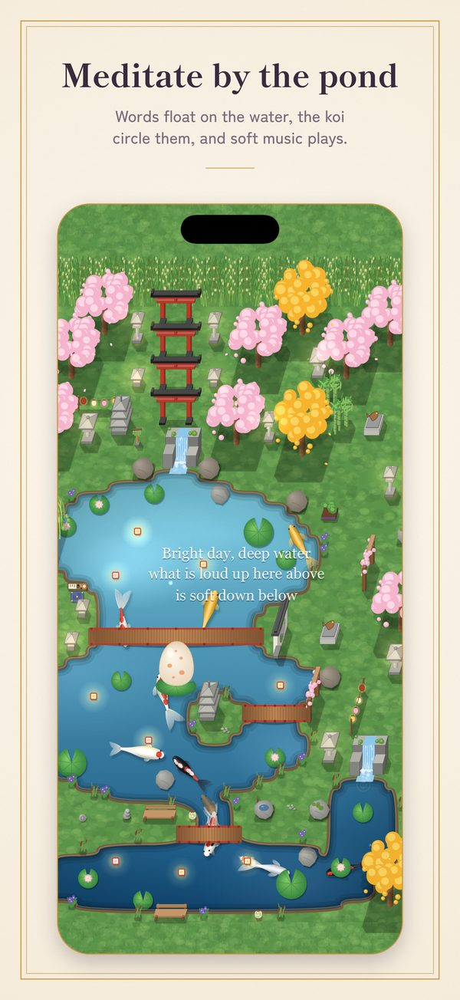

Raise a koi, keep a habit.
Suiren (睡蓮, “water lily”, said SWEE-ren) is a quiet habit tracker for iPhone. Each day you keep your habit, your koi grows, and your pond grows with it.

Free, with optional Suiren+. For iPhone, in the US App Store.

A look inside
Swipe through, or scroll sideways.










Why people keep their koi
One koi per habit
Hatch an egg, name your koi, and watch it grow as your streak does.
A pond of your own
Build a garden with lily pads, bridges, lanterns and waterfalls.
Rest days, no guilt
Set the days a habit is due, or let the pond sitter mind things while you're away.
Meditation mode
Set your phone down and the pond becomes a calm, drifting screensaver.
Widgets and Apple Health
Check in from your Home Screen, or let steps, sleep and workouts check in for you.
Yours alone
No account, no ads, no tracking. Your habits stay on your iPhone.
Suiren 1.5 is on its way
Meditation music, a zen garden to rake, a gentler Peaceful mode and much more. See what's new.
Need a hand? Visit Support. Read how we treat your data in the Privacy Policy.